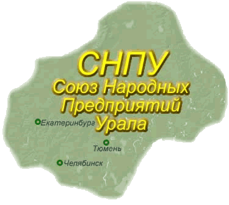

Фотогалерея Проводимые мероприятия План работы Союза
Информация для руководителей НП
К 10-летию юбилея СНПУ 2004-2014 Скачать *.pdf
Диверсификация Скачать *.doc
Информация о деятельности Скачать *.doc
К 10-летию СНПУ Скачать *.doc
Народные предприятия в условиях посткризисного развития Скачать *.doc
Отчет о работе СНПУ 2014 Скачать *.doc
Участники 23 семинара - совещания АОр (народных предприятий) 18 марта 2016г
СНПУ – Союз Народных Предприятий Урала - региональная некоммерческая организация народных предприятий Урала, созданная в 2004 году.
САОР объединяет 9 акционерных обществ работников (народных предприятий): ЗАОр «Туринский целлюлозно-бумажный завод», Свердловская область, АОр «Знамя», Свердловская область, ЗАОр «Надежда» Слободотуринского района, ЗАОр «Челябинское рудоуправление», ЗАОр «Энергия» с.Усениново Туринского района, ЗАОр «Городищенское» с. Городище Туринского района, ЗАОр "НП Набережночелнинский картонно-бумажный комбинат" г. Набережные Челны, Татарстан.Основные цели СНПУ - координация предпринимательской деятельности входящих в состав Союза акционерных обществ работников, предоставление и защита общих интересов, обмен опытом, вовлечение общественности в обсуждение проблем экономического развития страны.
Председателем Правления Союза с ноября 2004г. Является Генеральный директор ЗАОр «Туринский ЦБЗ» А. Коновалов. С июня 2010 г. Председателем Правления Союза является Генеральный директор АОР "НП Знамя" Г. Задирака.
Штаб-квартира организации располагается по адресу: г. Сухой Лог, Свердловской области, ул. Победы 14 комната 201.За шесть лет существования СНПУ удалось создать устойчивое, организованное сообщество. Одним из важнейших направлений деятельности Союза является организация и проведение профессионального обсуждения широкого круга социально-экономических проблем по вопросам повышения производительности труда, внедрения новых форм оплаты труда, формирования конкурентоспособного современного производства, развития новой культуры собственности и др. В этих целях раз в полгода проводятся выездные семинары-совещания с участием известных ученых г. Екатеринбурга, Москвы.